Поршневые кольца и шатунные вкладыши - заменаПоршневые кольца заменяют при ремонте шатунно-поршневой группы, при их износе или повреждении. Также кольца заменяют при капитальном ремонте двигателя. Для выполнения работы потребуется оправка для поршневых колец. Снятие 1. Снимаем головку блока цилиндров. 2. Снимаем поддон картера двигателя 3. Снимаем маслозаборник. 4. Поворачивая коленчатый вал за болт крепления его шкива ключом на 17 мм, устанавливаем поршень первого цилиндра в нижнее положение. 5. Ключом TORX Е10 отворачиваем две гайки крепления крышки шатуна первого цилиндра. 6. Снимаем крышку шатуна. 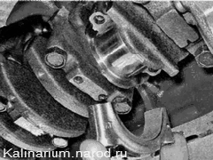7. Уперев ручку молотка в поршень, выталкиваем его вверх. 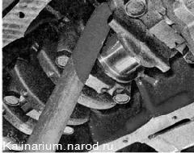 8. Извлекаем поршень из цилиндра. 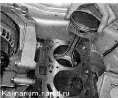9. Вынимаем вкладыши из шатуна и его крышки. 10. Фиксируем поршень за шатун в тисках. Слегка раздвинув замок кольца, снимаем верхнее компрессионное кольцо. Аналогичным образом снимаем нижнее компрессионное кольцо, маслосъемное кольцо и его расширитель. Кольца тонкие и чтобы их не сломать, вырежьте из пластмассовой бутылки полосу длиной немного меньше окружности поршня. Заведите кромку этой полосы под замок верхнего компрессионного кольца, а затем по кругу под все кольцо. 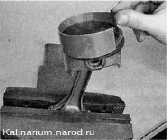Снимите с поршня полосу вместе с кольцом. Аналогичным образом снимите второе компрессионное и маслосъемное кольцо. Целесообразность замены колец зависит от степени износа цилиндров. Небольшой равномерный износ цилиндров (в пределах 0,05 мм) можно компенсировать установкой поршня другого класса с большим диаметром (см. «Поршень и шатун замена») Установка 1. Тщательно очищаем поршень от нагара и отложений. Осматриваем поршень, шатун и палец. Трещины на них недопустимы. Новые кольца подбираем в соответствии с диаметром поршня - номинального или ремонтного размера. 2. Перед установкой новых колец набором щупов измеряем зазор между поршневым кольцом и стенкой канавки, в которую кольцо будет установлено. 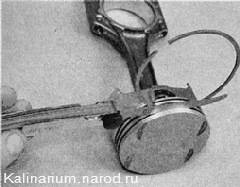Допустимые зазоры между стенками канавок и поршневыми кольцами Таблица 8.1.3
Допустимые зазоры между стенками канавки и поршневыми кольцами указаны в табл. 8.1.3. Если зазор превышает максимально допустимый, поршень подлежит замене. 3. Для подбора поршневых колец по тепловому зазору устанавливаем по очереди кольца в цилиндр блока па глубину 20—30 мм и набором плоских щупов определяем зазор в замке. 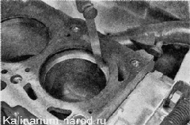
Замечание Предельно допустимый тепловой зазор при износе (для колец, бывших в употреблении) — 1 мм, зазор для новых колец 0,25-0,45 мм. Если зазор превышает максимально допустимый, кольцо подлежит замене. 4. Надеваем кольца на поршень. При этом маслосъемное кольцо... 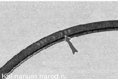
...и компрессионное кольцо устанавливаем надписью «ТОР» вверх. 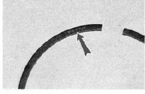
Новые кольца устанавливаем на поршень, начиная с расширителя маслосъемного кольца. 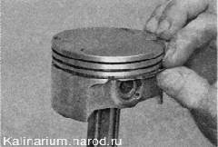 С помощью оправки надеваем маслосъемное кольцо, а затем нижнее компрессионное (кольца надеваем на оправку и аккуратно смещаем вниз до установки в канавку). Верхнее компрессионное кольцо надеваем без оправки: раздвинув замок кольца (не более, чем это требуется для надевания кольца па поршень), заводим на поршень сначала замок, а затем тыльную часть кольца. 5. Поворачиваем их замки так, чтобы они располагались под углом 120° относительно друг друга. Замок расширителя должен находиться развернутым на 180° относительно замка кольца. 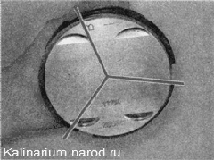 6. Смазываем чистым моторным маслом стенку цилиндра... 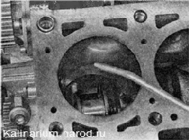...и наружную поверхность поршня. 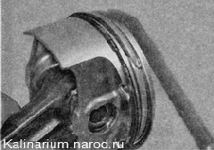 7. Надеваем оправку на поршень и обжимаем ею кольца, периодически слегка постукивая ручкой молотка по оправке для самоустановки колец. Крышки шатунов невзаимозаменяемые. На двигателе установлены «колотые шатуны», крышки которых изготовлены специальным методом. Поверхности соприкосновения крышки и шатуна получаются неровными, что при сборке обеспечивает идеальное прилегание деталей. 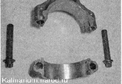 8. Вытираем насухо постели вкладышей в шатуне и крышке и устанавливаем в них вкладыши.
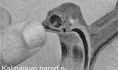 9. Смазываем чистым моторным маслом внутреннюю поверхность вкладышей. 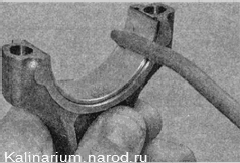10. Устанавливаем поршень в цилиндр блока. Стрелка на днище поршня должна быть направлена в сторону шкива коленчатого вала. 11. Прижимая оправку к блоку и постукивая ручкой молотка по днищу поршня, утапливаем поршень в цилиндр (при этом контролируем за продвижение шатуна к шейке коленчатого вала). 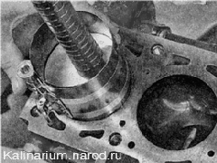
12. Устанавливаем на шатун крышку и затягиваем болты моментом 43,32-53,51 Пм (4,42-5,46 кгс-м).
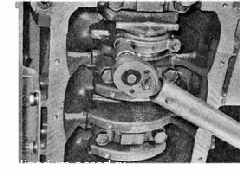
Другие три поршня собираем и устанавливаем аналогично. После установки всех поршней собираем двигатель в последовательности, обратной его разборке |